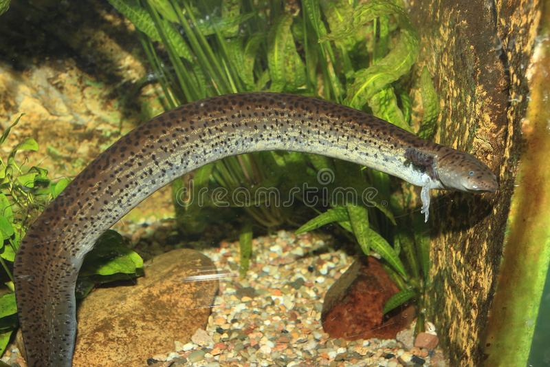

La sirena mayor ( Siren lacertina ) es un anfibio parecido a una anguila y uno de los tres miembros del género Siren.
Uno de los anfibios más grandes de América del Norte, Carecen de extremidades traseras, así como de cintura pélvica, y tienen
branquias externas durante toda su vida junto con pequeños pulmones. Carecen de párpados y tienen una cintura pectoral sin fusionar.
La coloración varía a lo largo de su rango, pero generalmente son de color oliva o gris con pequeños puntos amarillos o verdes en los lados.
Las patas delanteras, cada una con cuatro dedos, son tan pequeñas que pueden ocultarse en las branquias.
Es carnivora su principal dieta suelen ser caracoles, larvas de insectos y peces pequeños. Ocupa lugares acuáticos, fangosos, o con vegetación
abundante, pero siempre húmedos, de poca profundidad y calmados, como lagos, arroyos, pantanos, estanques y hasta ríos no tan agitados, debido
a que durante todas las etapas de su vida estas salamandras permanecen en el agua o en el lodo. posee un éxito de supervivencia que se ve reflejado
por la reproducción, Estas salamandras poseen una reproducción por medio de huevos, con nidadas numerosas que pueden llegar a alcanzar desde los
100 hasta los 300 huevos.
CARACTERISTICAS:
- Pueden llegar a medir de 18 a 97 cm de largo.
- Son carnivoras, se alimenta de vertebrados e invertebrados.
- Se le conoce como sirena mayor en vista de su gran tamaño
- puede respirar a través de diferentes mecanismos (pulmonar, por la piel, branquias).
- Es una especie nocturna.

REGRESAR AL MENU